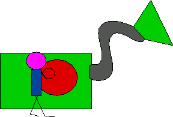

Click on the joke machine for a joke.
|
 |
This game was designed by me for a
fund-raising event that I organised to raise money for the
Apostleship of the Sea when I was 10. Originally, Nicola L. C. Talbot wrote the actual code, and I just did the storyboard and images. However, I remade the game myself using JavaScript years later.
If you enjoy playing the game, please consider making a donation to the AOS.